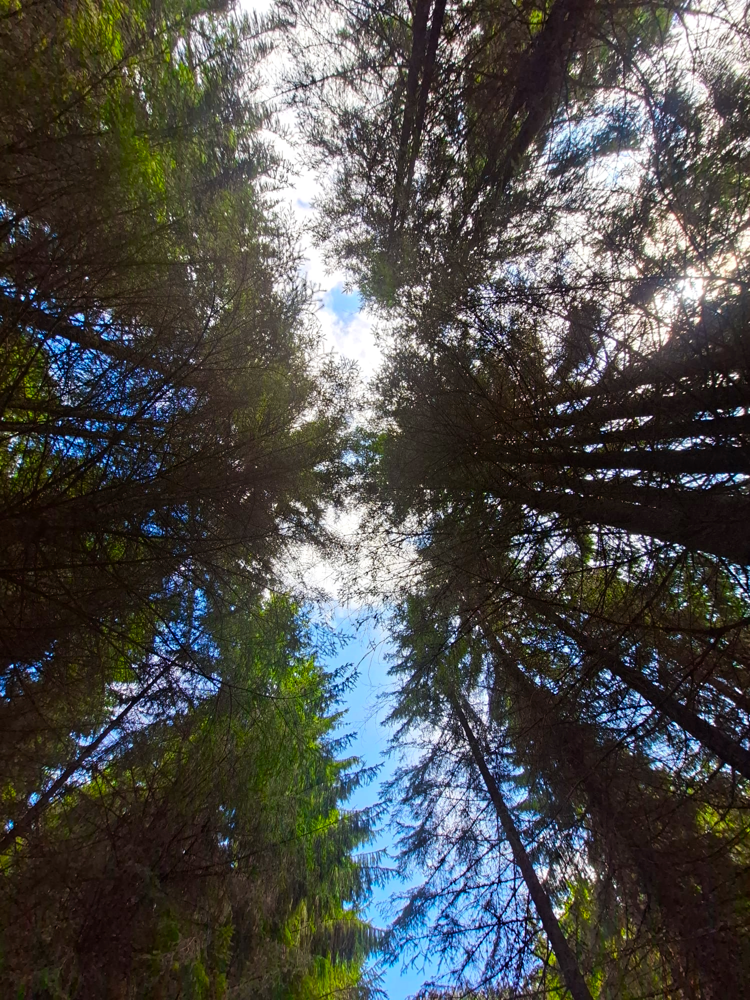

On Film
Some summits deserve more than words.


One step at a time.

Stories from the trail — sore feet, breathtaking views, and the silence above the treeline.
Every kilogram on your back is a kilogram you will curse by hour three. Here is what I trust.
Some summits deserve more than words.